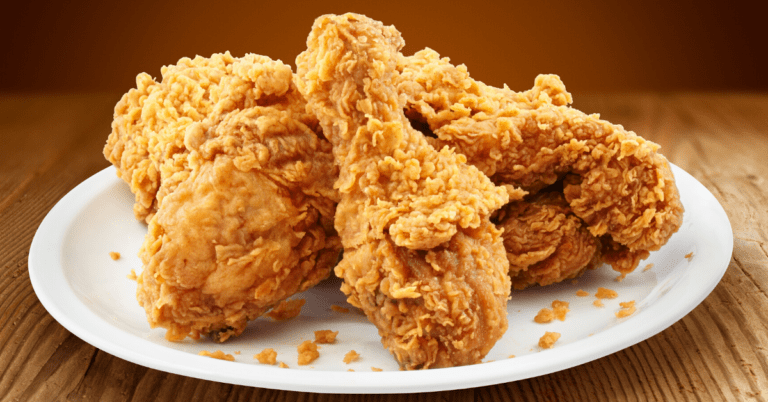

Southern Fried Chicken

What is Southern Fried Chicken?
Southern fried chicken is a popular dish in the southern United States, especially in the states of Alabama, Arkansas, Georgia, Kentucky, Louisiana, Mississippi, North Carolina, South Carolina, and Tennessee. It's made by coating chicken pieces in a mixture of flour, spices, and seasonings, then deep-frying them until they are golden brown and crispy. The result is a delicious, juicy chicken that is crispy on the outside and full of flavor. The dish is often served with sides like mashed potatoes, coleslaw, biscuits, and gravy, and is a staple of traditional Southern cuisine.
Ingredients
- 4-6 chicken pieces (legs, thighs, wings, or breasts)
- 2 cups of all-purpose flour
- 2 tsp of salt
- 1 tsp of black pepper
- 1 tsp of paprika
- 1/2 tsp of cayenne pepper
- 1/2 tsp of garlic powder
- 1/2 tsp of onion powder
- Vegetable oil, for frying
Steps:
- Rince and dry the chicken pieces
- In a shallow dish, mix together the flour, salt, pepper, paprika, cayenne pepper, garlic powder, and onion powder
- Heat the vegetable oil in a large, deep skillet over medium-high heat until it reaches 180°C / 350°F.
- Dredge each piece of chicken in the flour mixture, making sure to coat it evenly. Shake off any excess flour.
- Carefully place the chicken pieces into the hot oil and fry for 10-12 minutes on each side, or until the chicken is cooked through and the coating is golden brown and crispy.
- Remove the chicken from the oil and place it on a paper towel-lined plate to drain any excess oil.
- Serve hot with your favorite sides, like mashed potatoes, coleslaw, biscuits, and gravy.